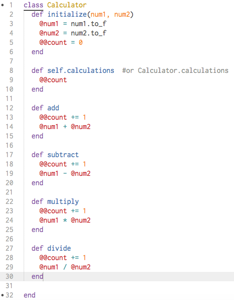
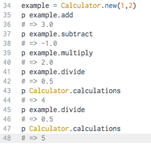

I don't know if Ruby is truly "The Classy-ist of Them All" as I'm not familiar with other languages yet so don't quote me on that.. Anyways, let's get down to business. What are classes?
When you hear the word "class" what do you think of? Probably a room full of desks filled with students and a teacher right? Each class is filled with students of similar ages who listen to the teacher, take notes, learn, etc. In the Ruby world, the class roster that groups these students together would be a Ruby class, the students are the objects (or instances) of the Ruby class 'Class', and the actions of note-taking, learning, etc would be the methods that each of the students (objects/instances) would be able to perform.
Confused? Let's back up a bit. Everything in Ruby is an object. And objects can perform different actions when asked. These actions are requested by calling a method that defines the behavior. Sometimes, these methods are similar and perform related actions. For instance our example above, lecturing, note-taking, writing on the whiteboard, etc are all related actions that are performed in a classroom. Or let's say you want to write a program that can do calculations. You want it to be able to add, subtract, multiply, and divide numbers. You may decide to make each of these actions separate methods and since they are all calculations, you should store these methods together in a class object that you call "Calculator" or whatever else you like. [Note: classes in Ruby are named with a capital letter]. That's basically the purpose of class, to group together related methods and creating instance objects of the class that can perform those methods.

Instance objects are individual objects of a class that takes on all the properties of the class and can perform all the methods contained within it. In our calculator example, an instance of the Calculator class could be the two numbers you want to work with (line 34). Then you can call the action: add, subtract, multiply, or divide on it to get the result you're looking for. In our real-world class example, the instance objects would be each individual student. In this way, the methods and programs can easily model real-world objects, their characteristics, actions, and other properties.
When talking about classes in Ruby, it's important to discuss class methods, class variables, instance methods, and instance variables. In the calculator example, add, subtract, multiply, and divide are all instance methods that contain instance variables denoted with the single at sign '@'. What does this mean? Remember how we said an instance (or individual object) of the Calculator class would be the two numbers you'd like to work with? Since these methods act on instances of the class, that makes them instance methods. The majority of the variables used in these methods would likewise be instance variables. Instance variables are method traversing variables that are limited only by their class boundaries (meaning they cannot leave their class). These variables can span multiple actions and be used in any of the methods defined within the class.
So if methods in classes are instance methods, what are class methods? First, methods defined in a class are not necessarily all instance methods. If the method name contains the word 'self' or the actual class name followed by the dot operator and the method name, that means it's a class method (versus instance methods that are just names). In our example, the class method would be on line 8 called calculations. Class methods are methods that act on the whole class and all its instances. Therefore, what this method is doing is counting the number of calculations that the Calculation class has done. It utilizes the class variable 'count' (denoted by two at signs '@@') that is modified every time a calculation is made using one of the instance methods. This variable is stored as a class variable because it is not associated to any one instance but the class as a whole and would be called on the class object Calculator itself (line 43 & 47).
All in all, related methods whether they be class or instance methods are stored together inside a class object defined with a capital letter. Class methods act on the class object itself and are behaviors that affect the whole class and all of its instances and are denoted with the class name or 'self' followed by a period and the name of the method. Instance methods on the other hand (defined by just a name), only act on individual objects of the class and typically make use of instance variables (denoted by a single '@') that are stored for each instance object and made available to every instance method within the class. Not all variables in instance methods are instance variables however. Variables with double '@' signs are class variables that aren't associated with any one instance object. Class variables store information for the class as a whole and can also be accessed by instance methods.